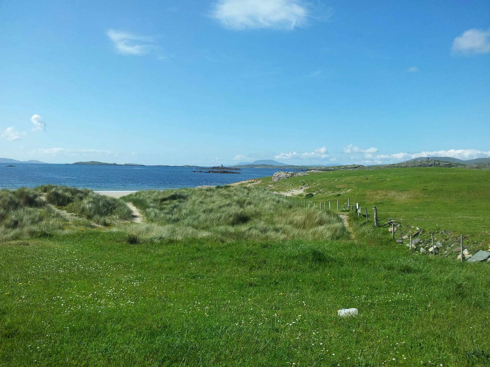
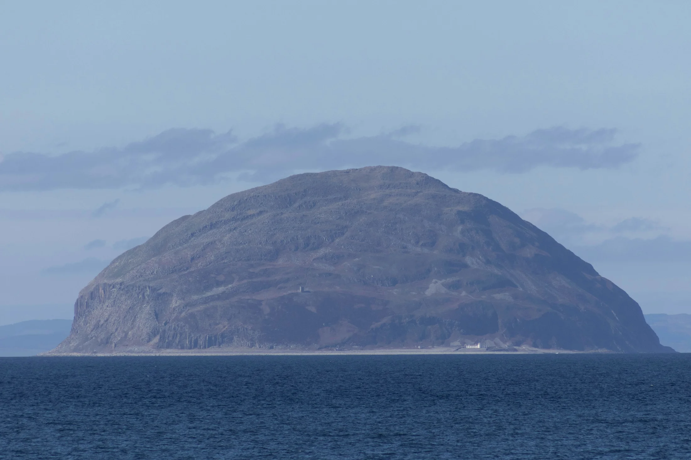
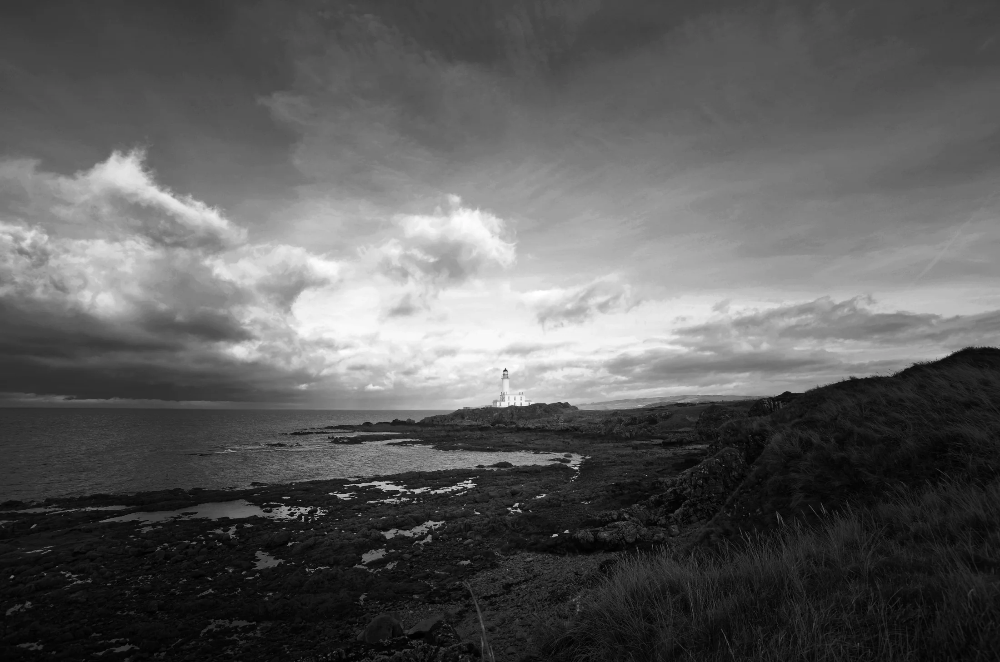
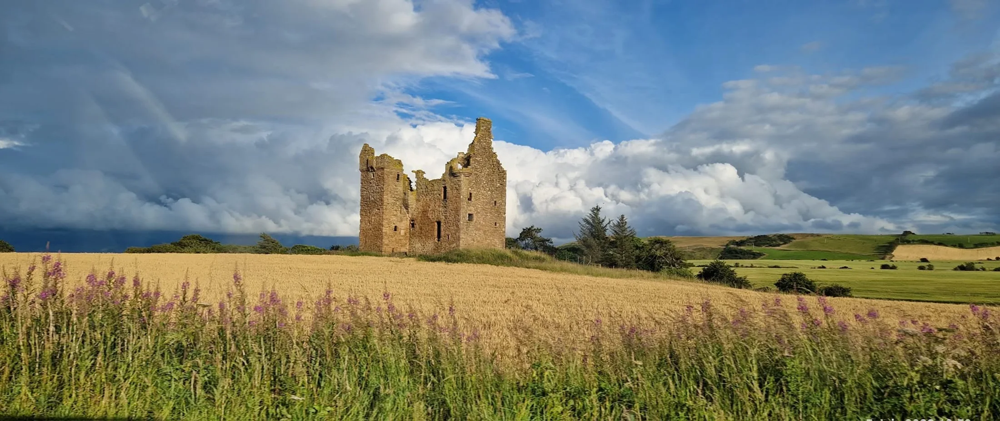
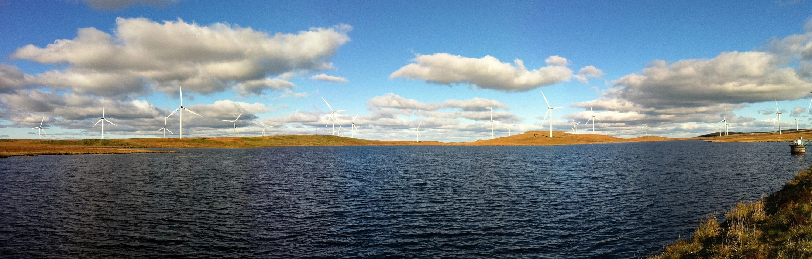

There is a particular quiet that settles over a coach after a ferry crossing.
Not tiredness exactly. More like suspension. The sea does something to people — the movement, the salt air, the couple of hours spent outside normal travel logic. And when the ferry docks at Cairnryan and the coach rolls off and Scotland begins, people are often neither fully alert nor fully asleep.
They are malleable. In the best possible sense.
Which makes this drive one of the most interesting two hours on the tour. Not because it looks dramatic from the outside. It does not. Most people would not list it among the highlights. But if you actually pay attention to what passes the window, the drive is quietly absurd.
Robert the Bruce. A volcanic island that supplies the world’s curling stones. A golf resort built on a wartime airbase at the likely birthplace of a medieval king. An abbey whose lands were stolen after a man was roasted alive. Robert Burns. Elvis Presley’s only moment on British soil. Europe’s largest onshore wind farm.
Then Glasgow.
In two hours. On a road most people sleep through.

Arriving: Loch Ryan
It begins on the water, before Scotland even properly starts.
Loch Ryan is the sea loch the ferry sails into — and it feels different from open sea almost immediately. The water calms. The hills close in on either side. Something sheltered and enclosed about it, the loch narrowing toward Cairnryan, the landscape gathering itself around you.
It does not look like much. But the Romans noted its strategic value. Robert the Bruce’s brothers landed nearby in 1307 attempting to reclaim Scotland — and were annihilated. During the Second World War, Cairnryan became a major military port, used to assemble sections of the Mulberry Harbours for the D-Day landings. German U-boats surrendered here after the war ended.
The village that carries all this history is tiny. A few houses, a port, a road north.
Scotland repeatedly turns quiet geography into strategic geography. Cairnryan is a good early lesson in that.
The Landscape Opens
North of Cairnryan, the road moves through the Southern Uplands — the rolling hills that form the backbone of southern Scotland. These are not Highland mountains. They are older, softer, rounded by time.
Then Ayrshire opens. The coast appears to the left. The land flattens into farmland — dairy pasture, cattle, productive agricultural ground. It feels settled in a way the Highlands never quite do. This is working Scotland rather than dramatic Scotland. The difference matters by the time Glasgow arrives.
Look west on a clear day and the shapes on the water begin to make sense. The long dark ridge is the Isle of Arran. Beyond it, the faint outline of the Kintyre peninsula on the mainland. Scotland spreading itself out across the water before most have even properly arrived.

Ailsa Craig
Somewhere along the coast, before most people have quite registered it, something appears offshore.
It rises abruptly from the Firth of Clyde — steep-sided, solitary, roughly the shape of a cylinder with a cone placed on top. Nothing around it explains it. It simply sits there, about ten miles out from Girvan, belonging to nothing nearby.
That is Ailsa Craig.
It is a volcanic plug — the hardened core of an extinct volcano, the softer rock around it eroded away over sixty million years until only this remained. Which is partly what makes its granite so unusual: dense, resistant, and almost perfectly suited for one very specific purpose.
Around sixty to seventy percent of all curling stones used worldwide are made from Ailsa Craig granite. The only curling stones approved for the Winter Olympics come from here. A company called Kays of Scotland still collects loose granite from the island and manufactures the stones used by every Olympic curling team on earth.
The island has also been, at various points, a lighthouse station, a prison described as a Scottish Alcatraz, and a refuge for Catholics during the Reformation. In 2001, its owner put it up for sale at £2.5 million. No takers. The price dropped to £1.5 million. Still no takers.
It is also known as Paddy’s Milestone — roughly the halfway point on the sea crossing between Belfast and Glasgow, the route that generations of Irish migrant workers used travelling to Scotland to find work. Emigrants watched it appear. Emigrants watched it fade behind them.
Standing in the sea, doing nothing in particular, it has quietly accumulated more history than most towns.
Turnberry
The lighthouse appears first, white on the headland above the golf course. Below it, on the rocks, the ruins of a castle.
This is Turnberry — and the layers here arrive quickly.
The castle was probably the birthplace of Robert the Bruce on 11 July 1274. His boyhood was here. Later, as King of Scots, he ordered the castle destroyed himself — in 1310, to stop the English reoccupying it. He demolished his own likely birthplace as a military decision. What remains visible from the road is what that decision left.
In the First World War, the golf courses were converted into a grass airfield for the Royal Flying Corps. The hotel became the officers’ mess. In the Second World War, concrete runways replaced the grass and the whole site became a military airfield.
Then came luxury golf. Then, in 2014, Donald Trump purchased the resort for approximately sixty million dollars and spent a further hundred and forty million on renovation.
Same coastline. Medieval lordship. Military infrastructure. Aristocratic leisure. Global branding.
Scotland reusing old landscapes for new expressions of power, century after century. The lighthouse just keeps working through all of it.

Crossraguel and Baltersan
A few miles inland, Crossraguel Abbey comes into view.
It was founded in 1244 on the pilgrimage route between Paisley and Whithorn — positioned deliberately, because pilgrims meant footfall, and footfall meant donations, land grants and influence. By 1404, the Abbot of Crossraguel was the most powerful figure in Ayrshire. The abbey controlled farmland, fishing rights, coal deposits and multiple parishes across the region.
Think of it less as a church and more as a corporation. In pre-Reformation Scotland, the Church was one of the largest landowners in the country, and the fertile Ayrshire land around Crossraguel was the entire point.
The Reformation changed everything. When Scotland broke from Rome in 1560, the legal protections that had defended Church land disappeared almost overnight. The abbey’s wealth remained. Its protection did not.
The Kennedys noticed.
In 1569 — nine years after the Reformation — Gilbert Kennedy, Earl of Cassillis, had the lay administrator of Crossraguel kidnapped and taken to a castle. He was roasted over a fire until he signed the abbey estates over to Kennedy. He did so after two turns on the spit. A rival later rescued him, but the land was gone.
Up the road, Baltersan Castle. Built in 1584 on the lands Gilbert Kennedy obtained from Crossraguel. The stones still standing there were built from what was taken.

The relatable version: imagine your employer kidnaps you and holds you over a fire until you sign your house over to him. Then builds himself a mansion with it. The abbey is where you worked. The castle is the mansion.
Baltersan is a ruin now. It was purchased in 2024 by an Italian software engineer who intends to turn it into a music school. Four hundred years from Kennedy power to abandoned ruin to Italian tech money and a music school. Very on-brand for Scottish land ownership.
The abbey is where you worked.
The castle is the mansion.
Alloway and Burns
The road reaches Alloway, a quiet village that has no particular reason to be famous except that Robert Burns was born here in 1759.
Burns is sometimes called the Shakespeare of Scotland, which is true but misses something important. Shakespeare wrote kings, nobles and grand historical drama. Burns wrote farmers, drinkers, lovers and people at the pub on a Tuesday. He wrote ordinary life — in Scots, the language ordinary Scottish people actually spoke — at a time when educated Scots were increasingly expected to sound English.
That made him quietly radical. He gave ordinary Scottish experience the dignity of literature.
And then comes the moment many overseas travellers realise they already know his work.
Because almost everyone in the English-speaking world has sung Auld Lang Syne at some point in their life — usually without thinking much about where it came from. New Year’s Eve. The room linking arms. The words nobody is quite sure about.
That song is Burns.
Auld lang syne means roughly: for old times’ sake. For the times that are gone. It is a song about friendship and memory and looking back at people and moments that mattered.
For people who have spent ten days together on a coach, those words occasionally land differently than they expected.
Prestwick
The airport appears on the left. It looks ordinary enough.
On 3 March 1960, a military flight carrying Elvis Presley stopped here to refuel on its way back from Germany, where he had been completing his army service. He was on British soil for approximately two hours.
It was the only time Elvis Presley ever set foot in the United Kingdom. He never performed here. Never came back. Thousands of fans had gathered at the terminal. He held an informal press conference. Signed autographs. Then boarded the plane and flew home to America.
The closest Britain ever got to Elvis was a refuelling stop in Ayrshire.
Prestwick now has a bar named after him.
Kilmarnock
At Kilmarnock the drive changes tone.
The coast is behind you. The landscape softens from agricultural to suburban. Roads widen. Industry appears. This is where Ayrshire stops being scenic and becomes functional — the hinge into modern Central Scotland.
Kilmarnock matters because it is where Burns first properly entered the world. In 1786, a printer named John Wilson published the first edition of Burns’ poems here — the Kilmarnock Edition. Ayrshire gave Scotland Burns. Kilmarnock gave Burns to the world.
The town was also, for generations, the home of Johnnie Walker whisky — export Scotland, commercial Scotland, the industrial trade that carried Scottish products to every corner of the empire. Diageo moved the bottling operations in 2012. The decision still stings locally.
Whitelee and Glasgow
Then, before the city arrives, something unexpected on the plateau above it.
The Whitelee Wind Farm stretches across the moorland — the largest onshore wind farm in Europe, hundreds of turbines turning slowly against the sky. After two hours of medieval castles and abbeys and pilgrimage routes and wartime airbases, the scale of it is almost disorienting.

Scotland’s landscape is still being reshaped. It did not stop in 1745.
And then Glasgow arrives. Suddenly, the way cities always do — density and noise and life after all that open, layered countryside.
The drive that looked like nothing was full the whole way.
Most people only realise that once it is over.
← Back to From The Road